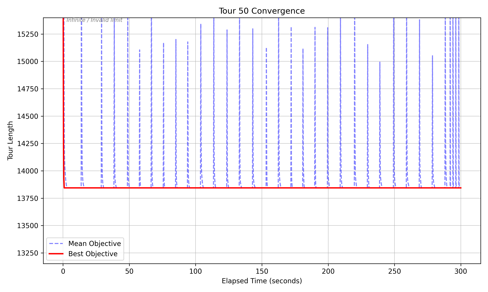
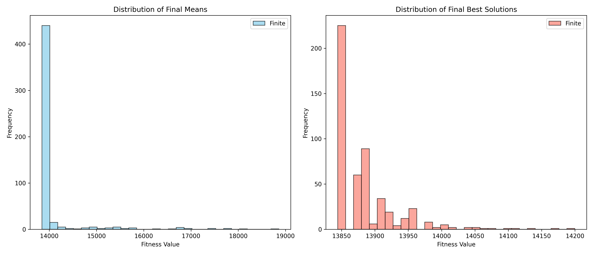
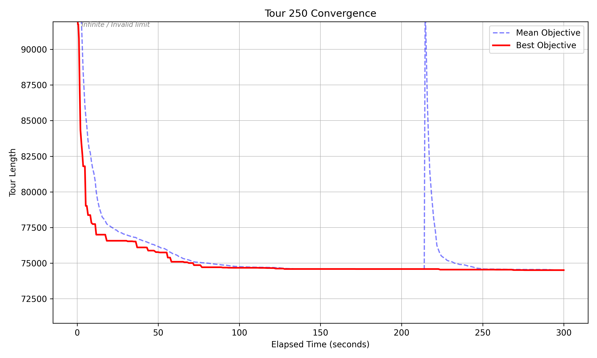
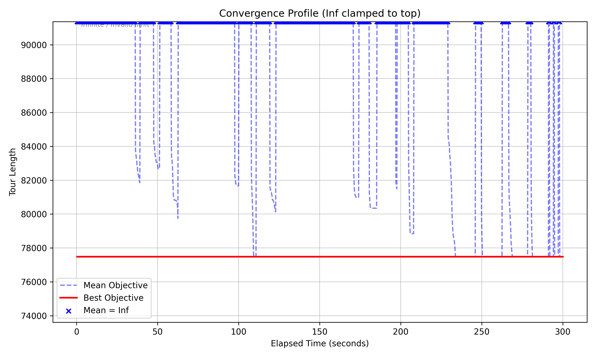

The design, and the one decision it hangs on
2-opt is applied to 100% of the offspring in every generation. It repeatedly checks pairs of edges and reverses the segment between them when doing so shortens the tour, and it is by far the most expensive thing in the loop. Everything else is a consequence of affording it.
The population is small — 50 individuals, 30 offspring per generation. Given a fixed time budget, spending it on fewer but much better individuals beat spending it on a large population of unimproved ones.
The mutation rate is high — 0.5. A double-bridge mutation cuts the tour at three points and reconnects the pieces out of order, which is deliberately destructive. It can be that destructive because local search repairs the damage immediately afterwards, and the combination escapes local optima that a gentler operator would sit in.
The neighbourhood is truncated. Naive 2-opt checks every edge pair, which is
O(N²). Restricting it to each city's 20 nearest neighbours brings that to O(kN) with k = 20. The
candidate lists are built once with argpartition — the top k unsorted in linear
time, then sorting only those k — rather than sorting every row of the distance matrix.
The search depth is a function of the clock. With more than ten seconds left, up to 30 improving swaps per individual; below that, five. The algorithm spends its last seconds covering more individuals shallowly rather than perfecting a few.
The rest of the loop
| Representation | Permutation of city indices; the tour closes implicitly from last back to first |
| Initialisation | 90% random permutations, 10% nearest-neighbour tours |
| Parent selection | k = 3 tournament, done as one NumPy matrix operation |
| Recombination | OX1 order crossover |
| Mutation | Double bridge, p = 0.5 |
| Elimination | (μ + λ) — pool parents and offspring, keep the best 50 |
| Restart | After 60 generations without improvement |
A permutation was chosen over the alternatives for a specific reason: the TSP constraint is that every city is visited exactly once, and a permutation enforces that by construction, so no repair step is ever needed. A binary encoding would be faster to manipulate but needs constant repair; an adjacency encoding preserves edges well but is expensive to decode for fitness and makes 2-opt awkward. Selection pressure was tuned rather than assumed — k = 10 collapsed the population immediately, k = 1 never converged, and 3 sat between them.
The restart
When the global best has not improved for 60 generations, the algorithm takes that single best individual, clones it across the entire population, and mutates every copy except one, which is protected. It is a hard reset that keeps the discovery and throws away the diversity that failed to build on it.
This is the mechanism the plots below are actually showing, and it is why they look the way they do.
What the convergence plots say

On 50 cities the algorithm finds what is very likely the optimum almost immediately, and then spends the remaining 297 seconds failing to beat it. Each blue spike is the population being cloned and kicked; each descent is 2-opt pulling it back down. The spikes get more frequent towards the end because the shallower late-stage local search converges faster and therefore stagnates sooner. It is a picture of an algorithm with nothing left to do, which is the correct behaviour and an unusually legible one.

Running it 500 times is the check that matters more than any single run: a low standard deviation means the algorithm finds the same quality of solution regardless of the random seed, rather than getting lucky once in the run you chose to plot.

At 250 cities the behaviour inverts. The best objective is still improving, so the restart condition mostly does not fire — there is one restart, around the 220-second mark. The tour length levels off near 70 seconds and only creeps down after that. Given more time this one would keep going.

At 1,000 cities the algorithm stops being evolutionary. The best objective settles at its final value from the start, which means the nearest-neighbour tours in the initial 10% are never beaten. The cause is the interaction between two parameters that are fine on their own: OX1 crossover on a 1,000-city tour introduces a large amount of disorder, and a local search capped at 30 improving swaps is nowhere near enough to repair it. So every offspring comes out worse than its parent and is immediately discarded by the strict (μ + λ) elimination. The population never moves.
That is a real limitation rather than a tuning miss, and it points at the fix: the swap cap has to scale with instance size, or the recombination has to be gentler at scale — the constant was tuned at 50 and 250 cities and quietly stopped making sense somewhere in between.
What the exercise was actually about
Evolutionary algorithms find usable solutions to problems where exact methods do not finish, and they hand you a set of solutions rather than one. The cost is the part this project made concrete: they converge into valleys, the parameters are difficult to choose well, and — as the 1,000-city case shows — a parameter that is correct at one scale can silently disable the whole search at another, while still producing a plausible-looking answer and a clean plot.